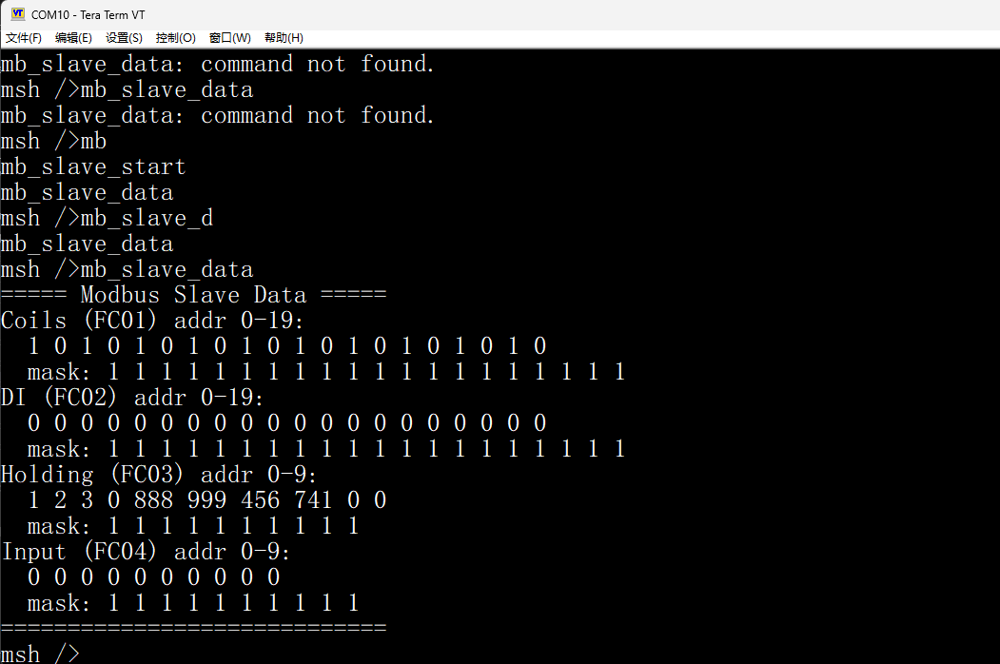

基于 RK3506 的多协议工业网关，以太网/RS485/WiFi 三介质并发采集，WebNet 实时仪表盘监控
┌─────────────────────────────────────────────────────────┐ │ RK3506 主机网关 │ │ ┌──────────┐ ┌──────────┐ ┌──────────┐ │ │ │ WebNet │ │ 轮询调度 │ │ Shell │ │ │ │ CGI API │ │ Scheduler│ │ 交互命令 │ │ │ └────┬─────┘ └────┬─────┘ └────┬─────┘ │ │ │ │ │ │ │ └─────────────┼─────────────┘ │ │ │ │ │ 共用数据层 (modbus_data) │ │ │ │ │ ┌─────────────┼─────────────┐ │ │ │ │ │ │ │ Modbus TCP Modbus RTU Modbus TCP │ │ (以太网) (RS485) (WiFi) │ └───────┼─────────────┼─────────────┼────────────────────┘ │ │ │ Ethernet RS485 WiFi │ │ │ ┌───────┴──────┐ ┌─┴──────────┐ ┌┴─────────────┐ │ STM32F407 │ │ RTU 从站1 │ │ TCP 从站3 │ │ TCP 从站12 │ │ (传感器) │ │ (ESP32-S3) │ │ RTU 从站1 │ └────────────┘ └────────────┘ └─────────────┘

统一管理多从站轮询调度的核心引擎。每个从站独立维护 libmodbus context、心跳线程和工作线程，通过消息队列接收控制指令（启动/停止/退出）。TCP 从站采用长连接 + 心跳保活策略，每 30 秒发送 FC03 请求维持连接活跃。轮询间隔可配置，支持运行时动态启停单个从站。
基于 RT-Thread WebNet 组件的 HTTP 接口层。CGI 模式注册 3 个端点：/cgi-bin/slaves（从站列表）、/cgi-bin/slave（单站详情）、/cgi-bin/write（写操作）。仪表盘 HTML 独立文件通过 FTP 上传至 /data/webnet/index.html（NAND Flash 持久化），编辑后 FTP 上传即可更新，无需重编固件。
STM32F407 同时运行 Modbus RTU 从站（站号 1，RS485 USART2）和 Modbus TCP 从站（站号 12，端口 502 SOCK 后端）。两个从站共享同一数据区，任一通道写入的数据另一通道也能读到，通过互斥锁保证并发安全。INIT_APP_EXPORT 自启动，上电即运行。
完整的 MSH 交互式命令行工具集，覆盖连接、读写、轮询调度全流程。支持 TCP/RTU 两种后端，开发调试阶段可逐步操作，生产环境可一键启动。